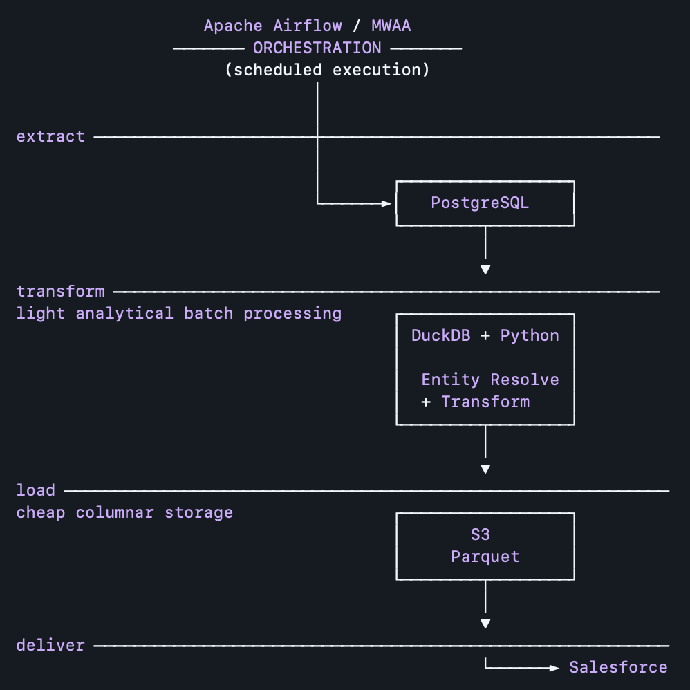
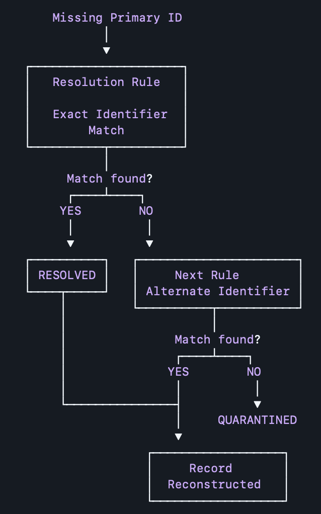
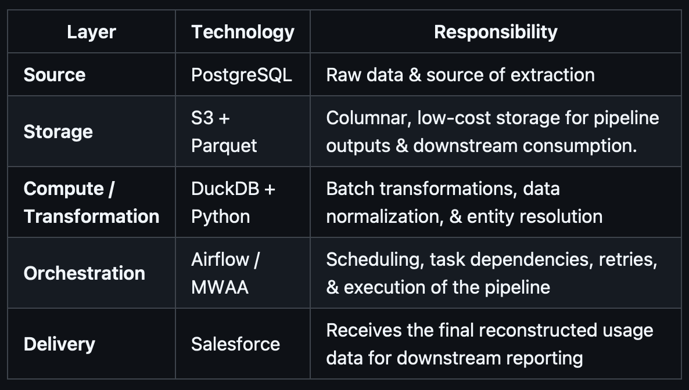
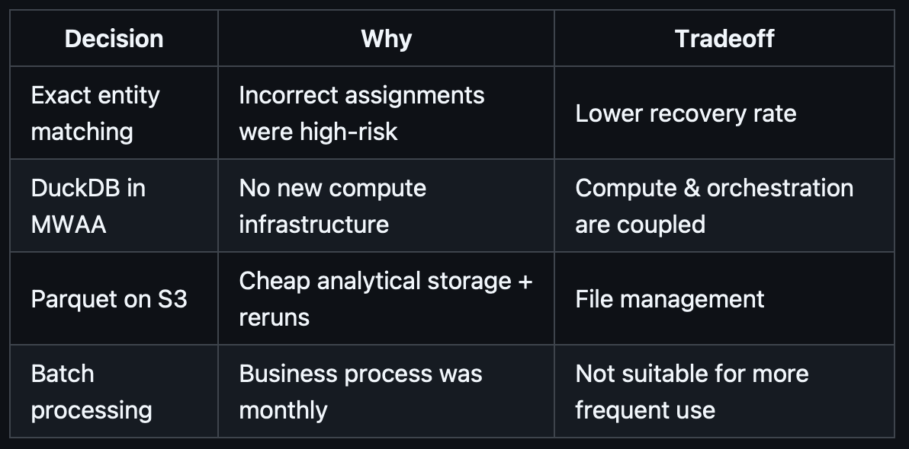

Built an automated entity-resolution system + batch data pipeline that automated a previously manual process for reconciling millions of software-usage records across 3 data sources. The pipeline leverages Airflow/MWAA for orchestration, DuckDB and Python for transformation and rule-based entity resolution, and S3/Parquet for low-cost analytical storage. This solution eliminated 26 hours of manual work each month without introducing any additional infrastructure costs. The design prioritizes correctness over coverage by quarantining unresolved records rather than risking incorrect organization assignments.
Domain: Enterprise Software Platform
Data: Software License Usage

A largely manual process was used to reconcile millions of usage events, many of which were missing key identifiers necessary for accurate tracking. This manual workflow involved visually scanning incomplete records to match them to the correct organization while maintaining business-specific licensing rules. As data volume increased, the process became increasingly time consuming, difficult to scale, and heavily error-prone.
The biggest constraint was the strict requirement that no additional infrastructure costs could be introduced.
Software usage & licensing telemetry were manually aggregated on a monthly basis. There were 3 sources of data maintained separately, with inconsistencies across each (Database, Salesforce, Spreadsheets).
In addition, the 3 sources of data were not synced. The transfer of information was done via copy-paste or new custom entry for every single record, resulting in poor data quality at the source. So for example,
When the primary universal identifier (license key) was missing, the record was also manually processed by visually scanning the dataset for alternative identifiers. As volume increased, this resulted in growing manual effort.
Rule-based entity resolution was a design decision & business requirement that weighed accuracy over coverage. An organization might be missing a primary universal ID, but there were several alternatives that I captured to stitch together a complete record.
The final output feeds downstream usage reporting. An incorrect assignment (false positive) was more destructive than leaving a record unresolved. Exact-match rules were only made on validated identifiers, which were known to be unique.
A record without any matches is never assigned to an organization. It is separated from reconstructed records in it's own table and never enters the next phase of the pipeline.
Alternative identifiers consisted of unique app manifests (custom by org), app uuids, and network IP ranges. They were often used in combination.
They were validated with solutions engineers, and even brought to the organization themselves for review.

Architecture Constraints
Pipeline Stages

Key Decisions
DuckDB was well suited to local analytical batch processing and enabled me to perform the transformations I needed, quickly. This was sufficient for the current monthly batch workload. For this reason, I wasn’t able to justify adding and operating a separate distributed processing tool like Apache Spark to our infrastructure.
The monthly workflow needed to replace manual execution with a repeatable process. I wanted to be able to manage task dependencies, retries, scheduling, and pipeline failures as the workflow grew.
False positives were more damaging than leaving records unresolved. Only validated matches reach downstream reporting, while ambiguous records remain isolated for review.
This project wasn’t intending to drastically modernize our current setup. My goal was to eliminate a recurring manual process under a strict set of constraints. With that said, I would make several changes if I could do it all again
As it stands the execution time for 8 million records has been consistently under 10 minutes, which is decent for our scale. Our MWAA configuration is structured for handling large workload bursts.
However, it would fail at a few points:
For this reason, compute isolation is the first proposed evolution as workload requirements grow.
Trade-Offs

from manual processes
monthly batch-workload
execution time
optimized for existing layout
This shifts DuckDB data processing off the MWAA workers entirely & allows Airflow to remain purely as an orchestration tool, which is its purpose. Until decoupling is worth the added complexity, I'm monitoring MWAA for sustained pressure (memory use during runs & runtime growth).
Lesson Learned: never running into an out-of-memory crash doesnt equate to being prepared for the scenario where you do. Always have a clear separation of transformation & orchestration.
It’s very difficult to constantly chase after messy data when you have no authority over the source systems. .
Lesson Learned: if I could start this all over again, I’d push for more regulation of data entry within source-systems prior to any development.
Id like to move transformations into models I can automatically test on uniqueness, nullability, reconciliation, and entity-resolution outcomes.
Lesson Learned: custom logging can get a bit messy. Delegating to a tool like dbt allows for version control and cleaner code management.